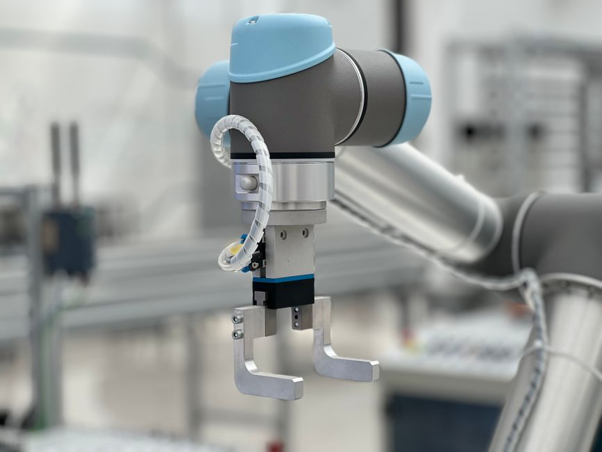

Imagine a world where robots aren't just confined to cages, performing repetitive tasks far away from human workers. Instead, picture them working side-by-side with people, lending a helping hand, making tasks easier, safer, and more efficient. This isn't science fiction; it's the reality of Collaborative Robots, or "Cobots," and they're revolutionizing industries across India and the globe! At MakerWorks, we believe understanding these intelligent partners is key to unlocking the future of automation and innovation.
What Exactly Are Cobots?
In the exciting world of robotics, we often hear about massive industrial robots that move heavy objects with incredible speed and precision. These powerful machines are usually kept behind safety fences because their strength and speed could be dangerous to humans. Cobots, on the other hand, are a special type of robot designed with one core principle in mind: human-robot collaboration.
Think of a cobot as a friendly, intelligent assistant. They are smaller, more flexible, and most importantly, equipped with advanced safety features that allow them to work directly alongside humans without the need for safety cages. Their primary role isn't to replace human workers, but to augment their capabilities, taking over dull, dirty, or dangerous tasks, and allowing humans to focus on more complex, creative, or decision-making roles.
Why Are Cobots a Game-Changer for India?
India's manufacturing sector is booming, and our economy is growing rapidly. In this dynamic environment, cobots offer incredible advantages, especially for small and medium-sized enterprises (SMEs) that might not have the resources for large-scale traditional automation.
- Increased Productivity: Cobots can handle repetitive, strenuous tasks, freeing up human workers to perform more value-added activities. This leads to faster production cycles and higher output.
- Enhanced Safety: By taking over tasks that involve heavy lifting, exposure to hazardous materials, or awkward postures, cobots significantly reduce the risk of workplace injuries for human operators.
- Flexibility and Adaptability: Unlike traditional robots that are often fixed for one specific task, cobots are easy to reprogram and redeploy for different jobs. This flexibility is crucial in rapidly changing production environments.
- Cost-Effectiveness: Their smaller footprint, ease of integration, and lower initial investment compared to traditional industrial robots make them an attractive option for businesses looking to automate without massive capital outlay.
- Skill Development: Introducing cobots encourages the development of new skills in programming, maintenance, and human-robot interaction, preparing our workforce for the jobs of tomorrow.
“Cobots aren't just tools; they are partners that amplify human potential, making workplaces safer, smarter, and more efficient. They represent a harmonious blend of human ingenuity and robotic precision.”
How Do Cobots Ensure Human Safety?
The most defining characteristic of a cobot is its inherent safety. This isn't an afterthought; it's built into their very design and programming. Here's how they achieve safe human-robot collaboration:
Built-in Safety Features
Cobots are equipped with a range of sensors and intelligent programming that allow them to react instantly to their environment and the presence of humans:
- Force and Torque Sensors: These sensitive sensors detect if the robot comes into contact with an object or a person. If an unexpected force is detected, the cobot will immediately stop or reverse its movement to prevent injury.
- Speed and Separation Monitoring: Cobots can adjust their speed based on the proximity of a human worker. If a person gets too close, the cobot might slow down, and if they enter a critical zone, it will stop completely.
- Safety-Rated Monitored Stop: This feature allows a cobot to stop safely when a human enters its workspace and then resume operation automatically once the human leaves, without needing to be restarted.
- Power and Force Limiting: Cobots are designed with limited power and force capabilities, ensuring that even in the event of an accidental collision, the impact is minimal and harmless.
- Hand-Guiding: Many cobots can be "taught" by simply grabbing their arm and moving them through a desired path. This intuitive programming method also ensures that the robot moves safely and predictably.
These features are often designed to comply with international safety standards like ISO/TS 15066, which specifically outlines the safety requirements for collaborative industrial robot systems.
Programming a Cobot: A Glimpse into Collaboration
One of the exciting aspects of cobots, especially for young learners interested in STEM, is their relative ease of programming. Many cobots use intuitive graphical user interfaces (GUIs) or "teach pendants" that allow users to program tasks without needing complex coding knowledge. However, understanding the logic behind their operation, especially how they incorporate safety, is fascinating.
Here’s a conceptual pseudocode example demonstrating a simple collaborative pick-and-place task, highlighting how safety might be integrated:
# Pseudocode for a simple collaborative assembly task
# This code illustrates the logic, not a specific programming language.
FUNCTION collaborative_assembly_task():
# Initialize robot speed to a safe, normal operating speed
SET robot_current_speed = NORMAL_OPERATING_SPEED
WHILE assembly_line_is_active:
# Check for human presence in the safety zone
IF human_presence_sensor.detects_human_in_zone():
# If human is detected, reduce robot speed
robot_current_speed = SLOW_COLLABORATION_SPEED
# Check if human is too close for safe operation
IF human_proximity_sensor.detects_human_too_close():
CALL safety_stop() # Immediately stop robot movement
DISPLAY_MESSAGE("Human too close! Robot stopped for safety.")
WAIT_FOR_HUMAN_TO_LEAVE_ZONE() # Pause until human moves away
RESUME_OPERATION() # Resume task after human leaves
# Robot performs its part of the task at the current speed
MOVE_TO_PICK_POSITION(Component_A)
GRASP_COMPONENT(Component_A)
MOVE_TO_ASSEMBLY_POINT(robot_current_speed)
# This is where human collaboration comes in
WAIT_FOR_HUMAN_TO_PLACE_COMPONENT(Component_B) # Human places part
PERFORM_ASSEMBLY_ACTION() # Robot assists with assembly
RELEASE_FINISHED_PRODUCT()
# Reset speed if no human detected
IF NOT human_presence_sensor.detects_human_in_zone():
robot_current_speed = NORMAL_OPERATING_SPEED
END WHILE # End of assembly_line_is_active loop
END FUNCTION
This example shows how a cobot constantly monitors its environment and adjusts its behavior to ensure human safety while still accomplishing its task collaboratively.
Cobots in Action: Real-World Applications
Cobots are incredibly versatile and are being adopted across a wide range of industries in India and globally:
- Manufacturing & Assembly: From intricate electronics assembly to packaging consumer goods, cobots assist with repetitive tasks, ensuring precision and reducing strain on human workers.
- Quality Inspection: Cobots can tirelessly perform visual inspections, checking for defects with high accuracy, often using integrated cameras and AI.
- Material Handling: They can load and unload machines, move parts between workstations, or assist with palletizing, reducing the need for heavy lifting by humans.
- Healthcare & Laboratories: In medical settings, cobots can assist with lab automation, dispensing medicines, or even aid in rehabilitation exercises, making processes more efficient and hygienic.
- Logistics & Warehousing: Cobots help with sorting, picking, and packing items, speeding up order fulfillment and reducing errors.
- Education & Research: Many universities and STEM labs, like MakerWorks, use cobots as educational tools to teach robotics, automation, and human-robot interaction in a safe, hands-on environment.
The Future is Collaborative: What's Next?
The journey of cobots is just beginning. We can expect to see even more sophisticated collaborative robots in the future, with advancements in:
- Artificial Intelligence (AI): Cobots will become even smarter, learning from human demonstrations, adapting to changing tasks, and making more autonomous decisions while maintaining safety.
- Enhanced Sensory Capabilities: Better vision systems, haptic feedback, and even touch sensitivity will allow cobots to interact with their environment and humans more naturally and precisely.
- Easier Integration: Plug-and-play solutions will make it even simpler for businesses of all sizes to adopt cobot technology.
- New Applications: We'll see cobots in fields we haven't even imagined yet, from assisting in creative arts to personal assistance.
For the young innovators and engineers of India, this presents an incredible opportunity. Learning about cobots today means being at the forefront of tomorrow's technological revolution.
Conclusion and Call to Action
Collaborative robots are more than just machines; they are a testament to how technology can be designed to empower humans, not replace them. They are making workplaces safer, boosting productivity, and opening up new possibilities across various industries, especially in a developing nation like India.
At MakerWorks, we believe that understanding and interacting with technologies like cobots is vital for building a future-ready generation. Are you excited about robots working alongside humans? Do you want to learn how to design, program, and interact with these amazing machines?
Explore the world of robotics with MakerWorks! Join our workshops, dive into our courses, and be part of the community that's shaping the future of human-robot collaboration. Your journey into the world of cobots starts here!